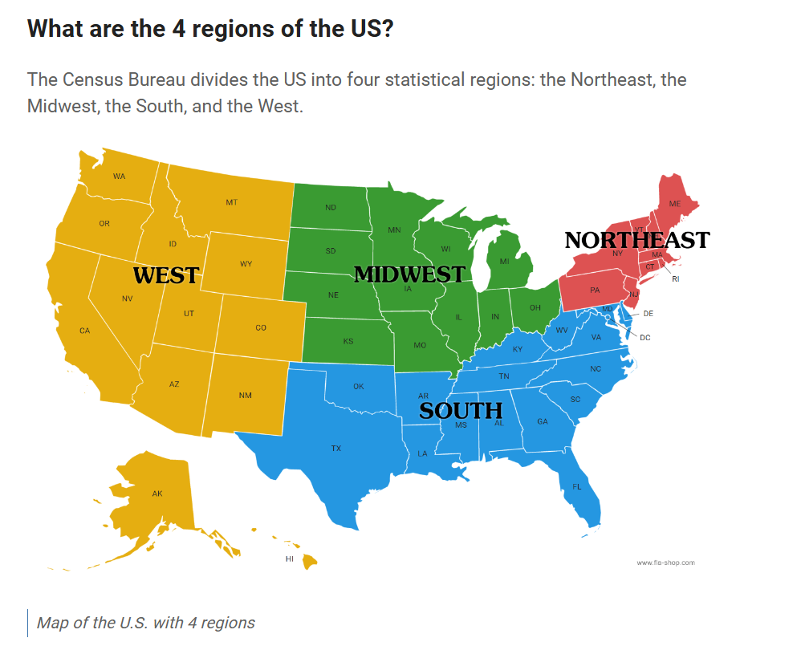

Question I aim to answer is: What is the best time to take a trip from BWI to maximize flight options?
The intended audience for this data analysis includes individuals planning a trip from BWI airport on spirit airlines.
The original data is from transtats and it provided resources to download flight information from any airport based on a year or month selected. https://www.transtats.bts.gov/ontime/departures.aspx
Note
This analysis was strictly done about flights on spirit airlines. BWI offers flights on other airlines.
library(tidyverse)
── Attaching core tidyverse packages ──────────────────────── tidyverse 2.0.0 ──
✔ dplyr 1.1.4 ✔ readr 2.1.5
✔ forcats 1.0.0 ✔ stringr 1.5.1
✔ ggplot2 3.5.1 ✔ tibble 3.2.1
✔ lubridate 1.9.3 ✔ tidyr 1.3.1
✔ purrr 1.0.2
── Conflicts ────────────────────────────────────────── tidyverse_conflicts() ──
✖ dplyr::filter() masks stats::filter()
✖ dplyr::lag() masks stats::lag()
ℹ Use the conflicted package (<http://conflicted.r-lib.org/>) to force all conflicts to become errors
library(datadictionary)library(knitr)data$Carrier.Code =as.factor(data$Carrier.Code)kable(create_dictionary(data), format ="simple", caption ="Data Dictionary of the Airport dataset")
pie_data = grouped_summary %>%mutate(fraction = count /sum(count), cumulative =cumsum(fraction), ymin =lag(cumulative, default =0), ymax = cumulative) ggplot(pie_data, aes(ymin = ymin, ymax = ymax, xmax =4, xmin =0, fill = Region)) +geom_rect() +coord_polar("y") +labs(title ="Flights in 2020 and 2021 from BWI to \neach region of the US", subtitle ="All flights are on spirit airlines", caption ="This was created to see which regions have the most flights available from BWI on spirit airlines. ") +theme_void() +theme(plot.caption =element_text(hjust =0.5)) +theme(plot.caption =element_text(size =8))
Important
States are split into regions based on the map below. 
groupby_month = regional_data %>%group_by(month) %>%summarize(count =n())groupby_month <- groupby_month %>%mutate(month =factor(month, levels =1:12, labels = month.abb)) ggplot(groupby_month, aes(x=month, y=count)) +geom_bar(stat ="identity", fill ="purple") +labs(title ="Number of Flights from BWI for each month \nin 2020 and 2021 combined",x ="Month", y ="Number of Flights", subtitle ="All flights are from spirit airlines", caption ="The graph was created to see which months have the most flights available")
ggplot(groupby_facet, aes(x = month, y = Total_flights)) +geom_col(fill ="lightblue") +facet_wrap(~Region) +labs(title ="Total Number of Flights in Each Month to each Region", y ="Total Number of Flights", x ="Month", caption ="Discover which month has the most flights available to the subsequent region.", subtitle ="Flights are on spirit airlines from 2020 and 2021") +scale_x_continuous(breaks =seq(min(groupby_facet$month), max(groupby_facet$month), by =2))
time_of_day = time_of_day %>%mutate(time_of_flight_categorized =case_when(hour(Scheduled.departure.time) <12~"AM",hour(Scheduled.departure.time) >=12~"PM" )) ggplot(time_of_day, aes(y = time_of_flight_categorized)) +geom_bar(fill ="orange") +facet_wrap(~month) +labs(title ="Total Number of Flights in the AM and PM by month", y ="Time of Day of Flight", x ="Number of Flights", caption ="Discover which time of day there are the the most flights.", subtitle ="Flights are on spirit airlines from 2020 and 2021")
Conclusion
The three plots created help the audience decide when and where is the best place to travel from BWI Airport on Spirit Airlines. The analysis was conducted based on flight information from 2020 and 2021. The pie chart shows that the majority of flights (70.9%) from BWI in 2020 and 2021 were to the southern region of the U.S. It can be observed that July and March have the most flights available. The faceted plot indicates that there are fewer than 200 flights each month to the Midwest, Northeast, and West regions, while the southern region consistently has more flights available each month. The last graph, faceted by month, reveals that January, February, March, April, May, July, November, and December all have more flights available in the PM than in the AM.
To maximize flight options, the audience should consider traveling to a city in the southern region in March or July during the PM hours.